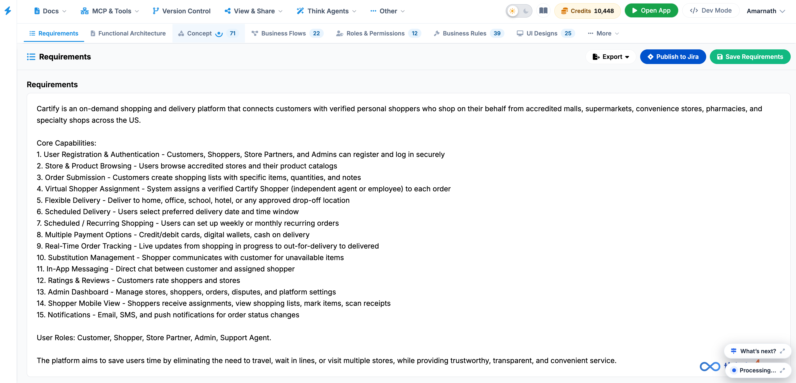

Requirements
The Requirements tab serves as the foundational text reference for the application, detailing the project overview, core system capabilities, and designated user roles.

Key UI Components
- Requirements Text View: Displays the overarching system summary (e.g., Cartify platform scope), itemized core capabilities (e.g., authentication, order submission, real-time tracking, substitution management), and defined user roles.
-
Action Buttons: Located in the top-right
corner:
- Export: Downloads the requirements specification in external formats.
- Publish to Jira: Syncs and pushes requirements directly into connected Jira boards as epics or user stories.
- Save Requirements: Persists any manual edits or updates made to the specification text.